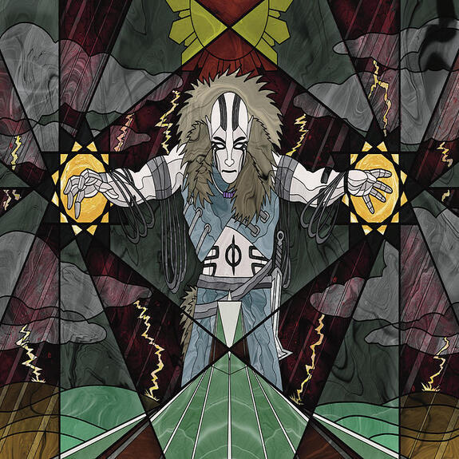
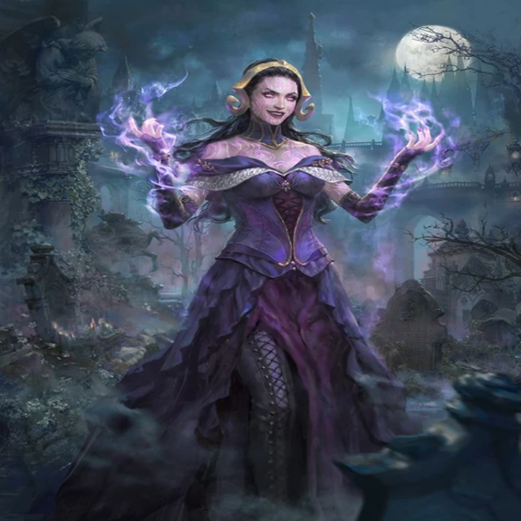
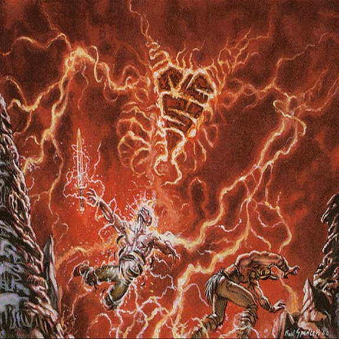
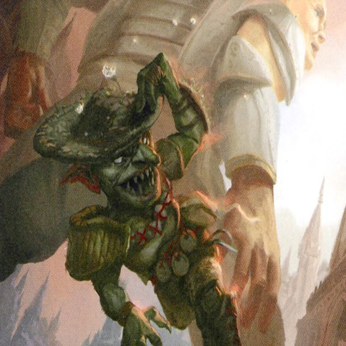
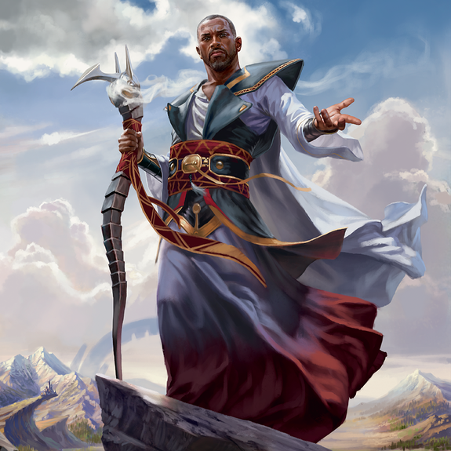
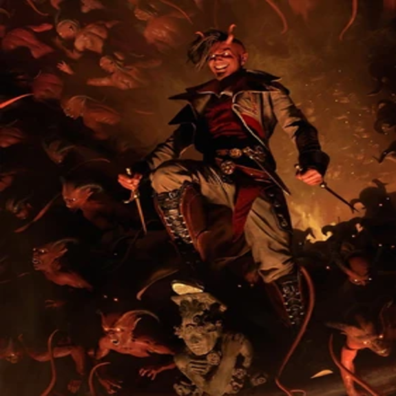

-
Elas il-Kor, Peregrina Sádica
Criatura Lendária - Phyrexiano Kor Clérigo
Toque mortífero
Toda vez que outra criatura entra no campo de batalha sob seu controle, você ganha 1 ponto de vida.
Toda vez que outra criatura que você controla morre, cada oponente perde 1 ponto de vida.ATK: 2 / DEF: 2 -
Liliana, a Necromante
Planeswalker Lendário - Liliana
+ 1: O jogador alvo perde 2 pontos de vida.
- 1: Devolva o card de criatura alvo de seu cemitério para a sua mão.
- 7: Destrua até duas criaturas alvo. Coloque até dois cards de criatura de qualquer cemitério no campo de batalha sob o seu controle.
HP: 4 -
Skizzik
Criatura - Elemental
Reforçar (Você pode pagar um custo adicional de ao conjurar esta mágica.)
Atropelar, ímpeto
No início da etapa final, se Skizzik não tiver sido reforçado, sacrifique-o.ATK: 5 / DEF: 3 -
Esquivadora da Rua do Estanho
Criatura - Goblin Ladino
Ímpeto
: Esquivadora da Rua de Estanho não pode ser bloqueada neste turno, exceto por criaturas com defensor.ATK: 1 / DEF: 1 -
Tori D'Avenant, Ginete da Fúria

Criatura Lendária - Humano Cavaleiro
Vigilância, atropelar
Toda vez que Tori D'Avenant, Ginete da Fúria, ataca, todas as outras criaturas atacantes que você controla recebem +1/+1 até o final do turno. As outras criaturas atacantees vermelhas que você controla ganham atropelar até o final do turno. Desvire cada outra criatura atacante branca que você controla.ATK: 3 / DEF: 3 -
Teferi, Herói de Dominária
Planeswalker Lendário - Teferi
+ 1: Compre um card. No início da próxima etapa final, desvire dois terrenos.
- 3: Coloque a permanente alvo que não seja um terreno no grimório do seu dono na terceira posição do topo.
- 8: Você recebe um emblema com "Toda vez que você comprar um card, exile a permanente alvo que um oponente controla.".HP: 4 -
Tibalt, Instigador Dissoluto
Planeswalker Lendário - Tibalt
Seus oponentes não podem ganhar pontos de vida.
- 2: Crie uma ficha de criatura vermelha 1/1 do tipo Diabo com "Quando esta criatura morre, ela causa 1 ponto de dano a qualquer alvo."HP: 5